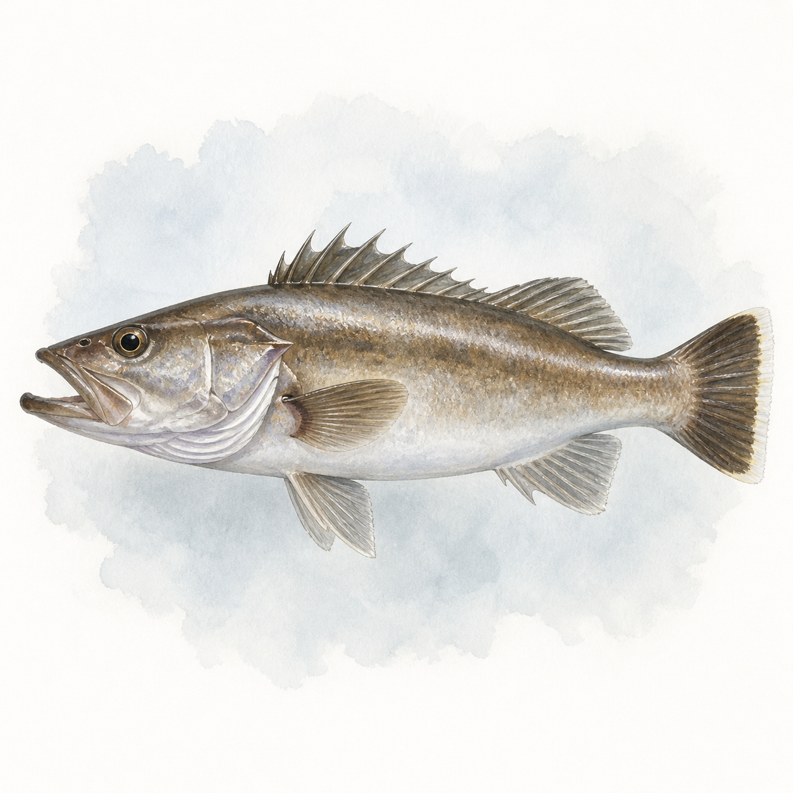

アラ
アラ
0〜10匹
今週 5便・3船宿
トップ › アラ
神奈川・東京・千葉・茨城・静岡の5県の船宿を横断集計しています。
★ 今週実績あり（5魚種）
主戦場は波崎（93便）・飯岡・外川の波崎〜銚子ライン。湘南の片瀬（江の島）も冬の拠点だ。ポイントは飯岡沖など水深100m超の根周りが中心。
★ 今週実績あり（3エリア）
| 1月 | 2月 | 3月 | 4月 | 5月 | 6月 | 7月 | 8月 | 9月 | 10月 | 11月 | 12月 | |
|---|---|---|---|---|---|---|---|---|---|---|---|---|
| 数釣 | ||||||||||||
| 型釣 |
※ 過去3年の関東船釣り釣果データより集計（2023〜2025年）
当サイトの過去3年・370便の集計では5月（59便）を中心に5〜9月へやや厚いが、月別の偏りは小さくほぼ通年狙える。kg中央値は2.5〜3kg（当サイト集計）で、これでも「若魚」——10kg超の大アラは数年に一度の夢として語られるクラスだ。
船釣り全般の Q&A（服装・船酔い・予約・ライフジャケット等）はよくある質問ページにまとめています。
関東アラ船釣りの釣果は5月に実績が集中しています。11〜2月・6〜9月も狙える時期です。 → エリア別のシーズン傾向を見る
関東アラ船釣りの主なエリアは波崎港（93便）、飯岡港（85便）、片瀬漁港（46便）です。
関東アラ船釣りの一日の釣果は2〜3匹が標準的なレンジです。中央値は2匹・上位10%の好日は5匹以上です。最高実績は10匹です（いずれも個人釣果ベース・船全体の合計数は除く）。
はい。関東では35船宿が出船実績があります。多くの船宿でレンタルタックルや仕掛けの購入が可能で、初心者でも安心して楽しめます。 → 初心者向けガイドを見る
